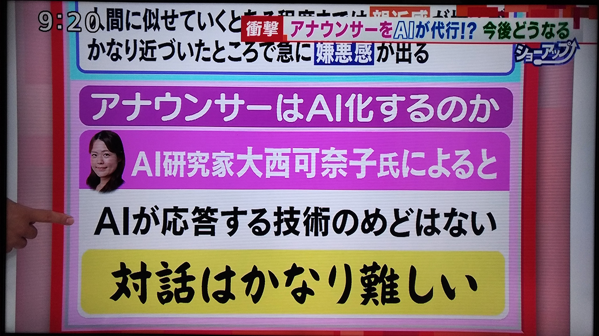
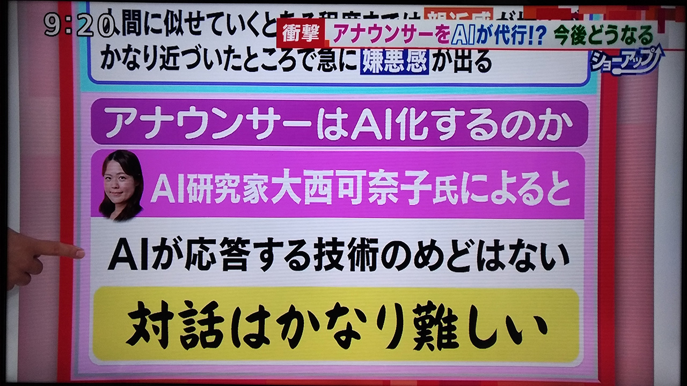

Eテレ「令和ネット論」#8 出演
2024/1/3
Eテレ「令和ネット論」#8 にゲストとして出演致しました。
放送日 2023/01/03 22:00～
／
— 令和ネット論＠NHKラーニングでも配信中 (@nhk_nethistory) December 8, 2023
🆕速報#令和ネット論
🎍新春放送決定
＼
皆さまのおかげで
2️⃣年連続の新春特番決まりました👏
テーマは…
🌎「2024年 トレンド大予測」
📺放送は 1/3(水) #Eテレ
🕙22:00〜22:45 です!!
スタジオ収録も盛り上がり
手ごたえを感じております😆
ご期待ください💙 pic.twitter.com/f9QsKZvCGW
🌎 #令和ネット論
— 令和ネット論＠NHKラーニングでも配信中 (@nhk_nethistory) December 20, 2023
🎍新春特番
「2024年 トレンド大予測」
📺1/3(水) #Eテレ 22:00～
✨番組初出演
AI研究家の#大西可奈子 さんに
収録の感想を聞きました📹😄 pic.twitter.com/LDfqWpfJIG
放送大学「情報セキュリティ概論（’２２）」（全１５回）出演
2022/4/1～
放送大学「情報セキュリティ概論（’２２）」に聞き手として全１５回に出演しております。
放送大学「数理・データサイエンス・ＡＩ リテラシー講座 心得」（全８回）出演
2021/4/5～
放送大学「数理・データサイエンス・ＡＩ リテラシー講座 心得」にナビゲータとして全８回に出演しております。
第1回放送日 2021/4/5(月) 6:00 BS231, 2021/4/6(火) 21:45 BS231
第2回放送日 2021/4/6(火) 6:00 BS231, 2021/4/7(水) 21:45 BS231
第3回放送日 2021/4/12(月) 6:00 BS231, 2021/4/13(火) 21:45 BS231
第4回放送日 2021/4/13(火) 6:00 BS231, 2021/4/14(水) 21:45 BS231
第5回放送日 2021/4/19(月) 6:00 BS231, 2021/4/20(火) 21:45 BS231
第6回放送日 2021/4/20(火) 6:00 BS231, 2021/4/21(水) 21:45 BS231
第7回放送日 2021/4/26(月) 6:00 BS231, 2021/4/27(火) 21:45 BS231
第8回放送日 2021/4/27(火) 6:00 BS231, 2021/4/28(水) 21:45 BS231
スペースシャワーTV「Suchmostyle」〜AI編〜出演
2019/5/30
スペースシャワーTV「Suchmostyle」〜AI編〜に出演致しました。
第1回放送日 2019/05/30 22:00～
第2回放送日 2019/06/06 22:00～
第3回放送日 2019/06/13 22:00～
第4回放送日 2019/06/20 22:00～
 

テレビ朝日の羽鳥慎一モーニングショーにコメント協力
2018/11/13
テレビ朝日の羽鳥慎一モーニングショーに、AIアナウンサーに関してコメント協力を行いました。